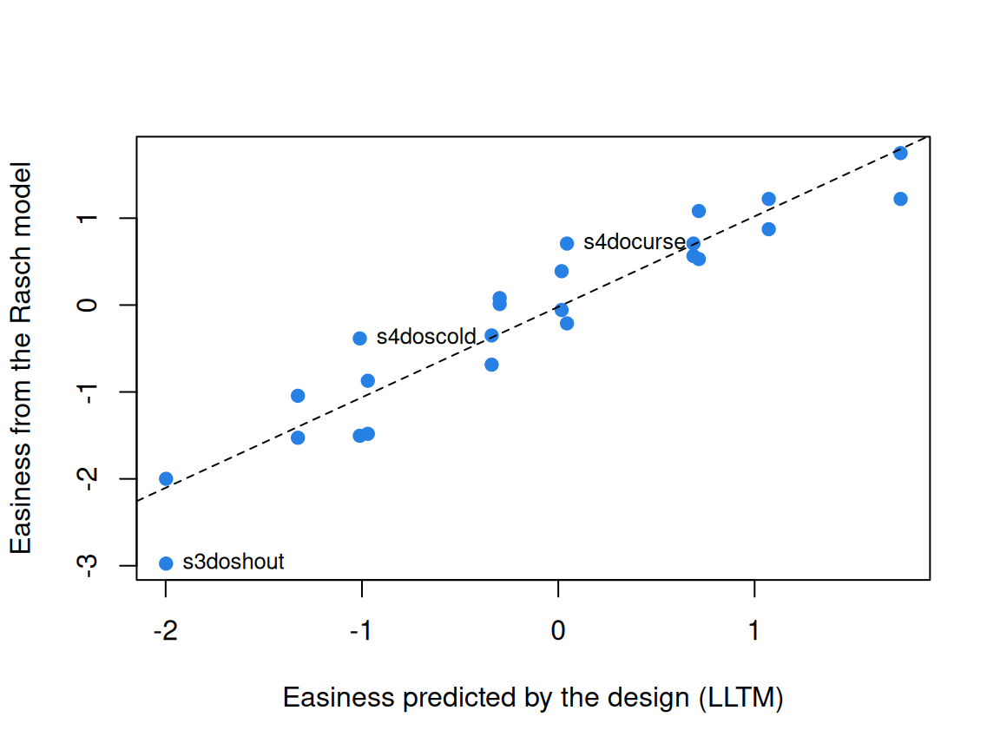

What is an item? Explanatory item response models
What this is for
The Rasch model gives every item a difficulty and stops there. It says that shouting at a bus driver is harder to endorse than cursing, not why. Yet items are usually built from a design: a situation, a behaviour, a grammatical construct, a stimulus shown after another stimulus. If the design explains the difficulties, we have learned something about the construct and can say how hard an item will be before anyone answers it. This lesson writes the Rasch model as a regression, so that explaining becomes a change of formula: item features in place of item difficulties, respondent covariates, items as draws from a family. Along the way it asks what, exactly, an item is.
Goals
By the end of this lesson you should be able to:
- write the Rasch model as a mixed logistic regression and fit it with
glmer(); - say what distinguishes a descriptive model from an explanatory one, and fit the linear logistic test model (LLTM);
- explain why item features can account for most of the variation in difficulty and still be rejected by a likelihood-ratio test, and what an item residual does about it;
- decide whether items should be fixed or random effects, and read the variance between and within item families;
- add respondent covariates to the same model, and treat a trial’s context as a feature of the item.
Core ideas
An item response model is a regression
Each row of a long IRW table is one response \(x_{ij}\), and the Rasch model is \[\text{logit}\Pr(x_{ij} = 1) = \theta_j + \beta_i, \qquad \theta_j \sim N(0, \sigma^2_\theta),\] where \(\beta_i = -b_i\) is item \(i\)’s easiness. The items are fixed effects, one indicator each; the respondents are a random intercept. That is a generalized linear mixed model (Rijmen, Tuerlinckx, De Boeck & Kuppens, 2003), and lme4 (Bates, Mächler, Bolker & Walker, 2015) fits it in one line (Doran, Bates, Bliese & Dowling, 2007; De Boeck et al., 2011):
glmer(resp ~ 0 + item + (1 | id), family = binomial, data = long_table)The 0 + gives each item its own intercept; (1 | id) is \(\theta\). Why not stay with mirt? Because everything in this lesson is a change to that formula. The two programs’ Rasch estimates agree to about a thousandth of a logit here (second Go deeper callout).
Try it: build the formula
Tick the terms you want for the 24 verbal aggression items of Item response data and the IRW. (Trait anger is a respondent covariate in lme4’s copy of these data, not the IRW’s.)
The Rasch model needs 25 parameters; swap the item effects for the three item features and it needs 6. Tick both and the model is not identified. An item residual adds one parameter, however many items there are.
Descriptive and explanatory models
A model with a parameter per item describes the items; one that replaces those parameters with predictors explains them (Wilson & De Boeck, 2004). Likewise for respondents.
The linear logistic test model (Fischer, 1973) writes each item’s easiness as a weighted sum of its features, \[\beta_i = \sum_k q_{ik}\,\eta_k,\] where \(q_{ik}\) is 1 if item \(i\) has feature \(k\) and \(\eta_k\) is that feature’s effect on easiness. For the verbal aggression items: an intercept, scold, shout, self to blame and want, five parameters in place of 24:
glmer(resp ~ behav + situ + mode + (1 | id), family = binomial, data = long_table)The LLTM is a Rasch model with a constraint on the difficulties, so it keeps the Rasch model’s properties (first Go deeper callout). And a feature means something that 24 difficulties don’t: if want adds 0.7 logits whatever the situation or behaviour, that is a testable claim about how people report aggression. Written the other way round, with items built from the features, it becomes a tool for designing tests (Embretson, 1998).
Explaining difficulty is not fitting it
How good is an LLTM? Two questions get mixed up. How much of the variation in difficulty do the features account for (the squared correlation of the LLTM’s easinesses with the Rasch model’s)? And do they account for all of it, which is what the likelihood-ratio test asks? With a few hundred respondents each easiness is estimated to within a tenth of a logit or so, so the test notices departures that barely dent the correlation.
Try it: explained, and still rejected
Each dot is an item on the verbal aggression design: its easiness is the design’s prediction plus a residual whose SD the slider sets.
At an SD of 0 the dots sit on the line and the expected χ² equals its 19 df. At 0.3 the features still explain more than nine tenths of the variance, and with 316 respondents the test rejects the LLTM overwhelmingly. More respondents raise the χ² and leave the share explained alone: the test weighs the distance from the line against the precision of each estimate. (The widget’s χ² is its expected value: the df plus the squared residuals weighted by each item’s information.)
So what should we conclude when the features explain nearly everything and the test says no? That items differ in ways the features don’t capture, as items written by people almost always will. Rather than set those differences to zero, a model can give them a variance: \[\beta_i = \sum_k q_{ik}\,\eta_k + \varepsilon_i, \qquad \varepsilon_i \sim N(0, \sigma^2_\varepsilon).\] This is the LLTM with an item residual (Janssen, Schepers & Peres, 2004): the items are now random effects around the design’s prediction, and \(\sigma_\varepsilon\) says how much the features leave unexplained. In glmer it is one more term, (1 | item). Items and respondents are then both random, and crossed, since every respondent meets every item (Van den Noortgate, De Boeck & Meulders, 2003).
Try it: items in families
Items often come in families: four items per grammatical construct, or clones from one template (Glas & van der Linden, 2003). Fixed or random? It depends on the question (De Boeck, 2008): fixed if we care about these items, random if they stand for items that could have been written and a new form will draw new ones. Then what matters is how much variation lies between families and how much within.
The defaults are close to the TROG grammar test below. Most of the variation is between families, so an item’s family pins down its difficulty, and a new family is a far larger gamble. Set the between-family SD to 0 and the two curves meet.
Person predictors
Add a respondent covariate and the random intercept becomes a residual around a regression: \[\theta_j = \sum_m \gamma_m z_{jm} + \delta_j, \qquad \delta_j \sim N(0, \sigma^2_\delta).\] The \(\gamma_m\) are differences in \(\theta\), estimated inside the measurement model rather than by scoring everyone and then regressing the scores, which carries each score’s error into the regression (a reasonable shortcut when scores are precise, as on a long test). This is latent regression (Mislevy, 1987; Zwinderman, 1991); in glmer, resp ~ 0 + item + grade + (1 | id).
What is an item? Trials and local dependence
In a cognitive task, what counts as an item is less clear. In the hearts and flowers task (Davidson, Amso, Anderson & Diamond, 2006), a child presses a key on the same side as a heart, or the side opposite a flower. The obvious items are shape × side, four of them, each met dozens of times. But a flower right after a heart means switching rules, which carries a cost (Monsell, 2003). Is it the same item as a flower after a flower?
Try it: the switch cost
A switch cost shifts the curve to the right. The gap in probability shrinks toward the ceiling, where most children below sit, so a cost constant in logits looks smaller in proportions correct. A trial covariate such as switch is an item predictor that redefines the item as the stimulus in its context; an item late in a booklet may likewise not be the item it was elsewhere.
Random effects give local dependence a model. A respondent may do better on one family than their \(\theta\) predicts, and all its items move together. A random effect for each respondent × family, (1 | id:family), captures the shift: given \(\theta\) alone a family’s items are dependent; given \(\theta\) and the family effect, independent again. This is the testlet model (Bradlow, Wainer & Wang, 1999) in a Rasch form, and its SD against the SD of \(\theta\) says how much of a respondent’s standing is specific to a family.
Simulate
The code simulates the verbal aggression design with 300 respondents, easinesses following the LLTM plus a residual with SD sd_item, and fits the Rasch model, the LLTM and the LLTM with an item residual. The first run takes 30 to 45 seconds, most of it loading lme4; nAGQ = 0 keeps the fits to seconds (delete it in your own R session for the full fit).
With the seed as written (sd_item <- 0.3), the features explain 88% of the Rasch easiness variance, the test gives χ² = 157 on 19 df, and the estimated residual SD is 0.33. Set sd_item <- 0: χ² falls to 13 (p = 0.82). At sd_item <- 0.15 the features explain 96% and the test still rejects (χ² = 57, p ≈ 10⁻⁵). Then keep 0.15 and set np <- 1000: the share explained barely changes and the χ² grows.
Download this code to run it as large as you like in your own R session.
With real data
verbagg is the main example: items built from a design, to be explained. trog_brinchmann_2019 is the contrast: items in families, for random items and local dependence. imps2025_hf is the case where the obvious definition of an item leaves something out, with a respondent covariate. Download the code; it needs lme4.
Verbal aggression: explaining the items
The verbal aggression data come from De Boeck and Wilson (2004), who use them throughout their book on explanatory models. As in Item response data and the IRW, 1 means the reaction was reported (“perhaps” or “yes”), and one item is stored as S4wantCurse, so the code lower-cases the names, which carry the design.
Code
library(lme4)
options(digits = 7) # R's default, in case a .Rprofile changes it
# nloptwrap is much quicker than glmer's default optimizer when a model has many
# fixed effects, as the Rasch model (one per item) does. The other models have few
# fixed effects and use the default.
ctl <- glmerControl(optimizer = "nloptwrap")
url <- "https://redivis.com/api/v1/tables/datapages.item_response_warehouse:v60_0.verbagg/rows?format=csv"
va <- read.csv(url)
va$item <- tolower(va$item) # one item is stored as S4wantCurse
# The item name carries the design: situation 1-4, want or do, and a behaviour.
va$behav <- factor(sub(".*(curse|scold|shout)$", "\\1", va$item))
va$mode <- factor(ifelse(grepl("want", va$item), "want", "do"), levels = c("do", "want"))
va$situ <- factor(ifelse(grepl("^s[12]", va$item), "other", "self")) # who is to blame
items <- unique(va[, c("item", "situ", "mode", "behav")])
items <- items[order(items$item), ]
rownames(items) <- NULL
c(respondents = length(unique(va$id)), items = nrow(items), responses = nrow(va))respondents items responses
316 24 7584 Code
head(items, 6)| item | situ | mode | behav |
|---|---|---|---|
| s1docurse | other | do | curse |
| s1doscold | other | do | scold |
| s1doshout | other | do | shout |
| s1wantcurse | other | want | curse |
| s1wantscold | other | want | scold |
| s1wantshout | other | want | shout |
The same data ship with lme4 as VerbAgg, to which De Boeck et al. (2011) fit these models, so first we check that the copies agree:
Code
# Sanity check: the same data ship with lme4 (VerbAgg, with r2 = "Y" when the
# answer was perhaps or yes). If the item proportions agree, the models below
# can be checked against De Boeck et al. (2011), who fit them to VerbAgg.
p_irw <- tapply(va$resp, va$item, mean)
p_lme4 <- tapply(VerbAgg$r2 == "Y", tolower(VerbAgg$item), mean)
all.equal(p_irw, p_lme4[names(p_irw)], check.attributes = FALSE)[1] TRUEThey do, item for item. Now the Rasch model, as a regression:
Code
# The Rasch model as a mixed logistic regression: a fixed intercept for each item
# (its easiness, so b = -coefficient) and a random intercept for each respondent
# (theta, with mean 0 and an SD to estimate).
rasch <- glmer(resp ~ 0 + item + (1 | id), data = va, family = binomial, control = ctl)
easy <- fixef(rasch)
names(easy) <- sub("^item", "", names(easy))
round(head(sort(easy), 3), 2) # the hardest items: all three about shouting s3doshout s4doshout s3wantshout
-2.98 -2.00 -1.53 Code
round(tail(sort(easy), 3), 2) # the easiests1wantcurse s1docurse s2wantcurse
1.22 1.22 1.75 Code
VarCorr(rasch) # SD of theta Groups Name Std.Dev.
id (Intercept) 1.3784 The hardest items to endorse are about shouting, most of all doing it when you are to blame, and the easiest are about cursing. The SD of \(\theta\) is 1.38. Now the LLTM:
Code
# The LLTM: 24 easinesses replaced by an intercept and four design effects.
lltm <- glmer(resp ~ behav + situ + mode + (1 | id), data = va, family = binomial)
round(fixef(lltm), 2)(Intercept) behavscold behavshout situself modewant
1.07 -1.06 -2.04 -1.03 0.67 Code
VarCorr(lltm) Groups Name Std.Dev.
id (Intercept) 1.3389 Each feature does what the descriptive look suggested: against cursing, scolding costs 1.06 logits and shouting 2.04; being to blame yourself costs 1.03; want adds 0.67 over do. How well do five parameters do in place of 24?
Code
anova(lltm, rasch)| npar | AIC | BIC | logLik | -2*log(L) | Chisq | Df | Pr(>Chisq) | |
|---|---|---|---|---|---|---|---|---|
| lltm | 6 | 8249.935 | 8291.537 | -4118.967 | 8237.935 | NA | NA | NA |
| rasch | 25 | 8128.509 | 8301.854 | -4039.255 | 8078.509 | 159.4255 | 19 | 0 |
Code
# How much of the Rasch easiness does the design account for?
X <- model.matrix(~ behav + situ + mode, items)
pred <- drop(X %*% fixef(lltm))
e <- easy[items$item]
round(c(r = cor(e, pred), r_squared = cor(e, pred)^2), 2) r r_squared
0.94 0.89 Code
plot(pred, e, pch = 19, col = "#2780e3",
xlab = "Easiness predicted by the design (LLTM)", ylab = "Easiness from the Rasch model")
abline(lm(e ~ pred), lty = 2)
far <- order(-abs(resid(lm(e ~ pred))))[1:3]
text(pred[far], e[far], items$item[far], pos = 4, cex = 0.8)
χ² = 159 on 19 df, and the AIC prefers the Rasch model (8,129 against 8,250), yet the design explains 89% of the variance in the Rasch easinesses (r = 0.94; the labelled items sit furthest from the line). As in the widget, both are true. An item residual gives the remainder a size:
Code
# The LLTM with an item residual: items scatter around the design's prediction
# with an SD to estimate.
lltm_r <- glmer(resp ~ behav + situ + mode + (1 | id) + (1 | item), data = va,
family = binomial)
round(fixef(lltm_r), 2)(Intercept) behavscold behavshout situself modewant
1.07 -1.06 -2.10 -1.05 0.71 Code
VarCorr(lltm_r) Groups Name Std.Dev.
id (Intercept) 1.37153
item (Intercept) 0.34233 Code
AIC(rasch, lltm, lltm_r)| df | AIC | |
|---|---|---|
| rasch | 25 | 8128.509 |
| lltm | 6 | 8249.935 |
| lltm_r | 7 | 8163.826 |
The residual SD is 0.34, against 1.37 for \(\theta\): items scatter around the design’s prediction by about a quarter of the spread of respondents. The feature effects barely move, and the AIC (8,164, with 7 parameters) falls between the LLTM’s and the Rasch model’s.
So which would I fit? It turns on one assumption: that the features are all there is to an item, which holds only when items were generated from the features by rule. Otherwise I’d fit the LLTM with an item residual, not without it: real items always leave something over, and the residual SD says how much. The Rasch model describes these 24 items best; the LLTM with a residual says what makes them differ, and how far that account falls short.
TROG: items in families
The Test for Reception of Grammar (Bishop, 1979) tests the understanding of grammar in blocks of four items, one block per grammatical construct: the child hears a sentence and picks the matching picture. These are 210 Norwegian children at the first assessment of a longitudinal study (Brinchmann, Braeken & Lyster, 2019), distributed with the mokken R package (van der Ark, 2007). The test is copyrighted, so we refer to blocks by their letters, a to t. Keying: 1 is correct.
Code
url_trog <- "https://redivis.com/api/v1/tables/datapages.item_response_warehouse_2:v24_0.trog_brinchmann_2019/rows?format=csv"
tr <- read.csv(url_trog)
# item_family numbers the 20 blocks of four items; the item names (a1 to t4) use letters.
tr$family <- factor(letters[tr$item_family], levels = letters[1:20])
c(children = length(unique(tr$id)), items = length(unique(tr$item)),
families = nlevels(tr$family), missing = 210 * 80 - nrow(tr))children items families missing
210 80 20 0 Code
round(tapply(tr$resp, tr$family, mean), 2) # proportion correct, block by block a b c d e f g h i j k l m n o p
0.95 0.92 0.87 0.85 0.82 0.70 0.61 0.57 0.52 0.46 0.40 0.29 0.30 0.28 0.08 0.22
q r s t
0.19 0.15 0.14 0.07 Nothing is missing; the blocks run roughly from easy (a, 0.95 correct) to hard. Treat items and blocks as random:
Code
# Items and blocks both random: how much of item difficulty lies between blocks?
g1 <- glmer(resp ~ 1 + (1 | id) + (1 | family) + (1 | item), data = tr,
family = binomial)
v1 <- as.data.frame(VarCorr(g1))
v1 <- setNames(v1$vcov, v1$grp)
round(v1, 2) id item family
3.79 0.35 5.90 Code
round(c(share_between_blocks = v1[["family"]] / (v1[["family"]] + v1[["item"]])), 2)share_between_blocks
0.94 The variance of difficulty is 5.90 between blocks and 0.35 within them: 94% lies between blocks, as a test built from constructs should show. For new items written for the same constructs, the within-block SD of about 0.6 (the square root of 0.35) is the uncertainty about each.
Are a block’s four items independent given \(\theta\)? Add a child × block effect:
Code
# A child x block random effect: a child's standing can shift from block to
# block, so the four items of a block are not independent given theta.
g2 <- glmer(resp ~ 1 + (1 | id) + (1 | family) + (1 | item) + (1 | id:family),
data = tr, family = binomial)
VarCorr(g2) Groups Name Std.Dev.
id:family (Intercept) 1.06931
id (Intercept) 2.20577
item (Intercept) 0.67015
family (Intercept) 2.80615 Code
anova(g1, g2)| npar | AIC | BIC | logLik | -2*log(L) | Chisq | Df | Pr(>Chisq) | |
|---|---|---|---|---|---|---|---|---|
| g1 | 4 | 12041.89 | 12072.81 | -6016.946 | 12033.89 | NA | NA | NA |
| g2 | 5 | 11800.29 | 11838.93 | -5895.143 | 11790.29 | 243.6067 | 1 | 0 |
The AIC falls from 12,042 to 11,800 (χ² = 244 on 1 df), and the child × block SD is 1.07, against 2.21 for \(\theta\): some children understand a construct better or worse than their overall level predicts, and the block’s four items move together. Local independence given \(\theta\) doesn’t hold, and the model says by how much.
Hearts and flowers: what is an item?
Obradović, Sulik, Finch and Tirado-Strayer (2018) validated a tablet version of hearts and flowers for classrooms; the IRW table also holds preschool data from DeJoseph, Merculief, Sulik and Obradović (2025). We use grades 3 to 5, in the block that mixes hearts and flowers. Keying: 1 is a correct key press.
Code
url_hf <- "https://redivis.com/api/v1/tables/datapages.item_response_warehouse_2:v24_0.imps2025_hf/rows?format=csv"
hf <- read.csv(url_hf)
# The mixed block of the grades 3-5 cohort: hearts and flowers in random order.
hf <- hf[hf$cohort == "plus" & hf$block == "mixed test", ]
c(trials = nrow(hf), children = length(unique(hf$id))) trials children
31394 806 Code
table(grade = hf$cov_grade[!duplicated(hf$id)])grade
3 4 5
275 356 175 Code
round(tapply(hf$resp, hf$item, mean), 2) # the four "items": shape x side flower left flower right heart left heart right
0.86 0.84 0.83 0.82 Taken as shape × side, the four items are nearly alike: 0.82 to 0.86 correct. But what came just before?
Code
# What came just before? Look up trial n - 1 in the same session and block.
key <- paste(hf$id, hf$time, hf$trial_num)
hf$prev <- hf$stim_shape[match(paste(hf$id, hf$time, hf$trial_num - 1), key)]
hf$switch <- as.integer(hf$stim_shape != hf$prev)
table(switch = hf$switch, useNA = "ifany") # NA: the previous trial isn't in the tableswitch
0 1 <NA>
11239 11109 9046 Code
round(tapply(hf$resp, list(shape = hf$stim_shape, switch = hf$switch), mean), 2) switch
shape 0 1
flower 0.89 0.83
heart 0.87 0.80A gentle note: trials with no response inside the time limit were dropped in processing, and the IRW holds back a random share of trials (processing script), so for 9,046 trials (the first of each block among them) the previous trial isn’t in the table; we set them aside. Among the rest, a switch lowers the proportion correct from 0.89 to 0.83 for flowers and from 0.87 to 0.80 for hearts. Now the model, with grade as a respondent covariate:
Code
hs <- hf[!is.na(hf$switch), ]
hs$grade <- factor(hs$cov_grade)
h0 <- glmer(resp ~ 0 + item + (1 | id), data = hs, family = binomial)
h1 <- glmer(resp ~ 0 + item + switch + grade + (1 | id), data = hs, family = binomial)
round(fixef(h1), 2) itemflower left itemflower right itemheart left itemheart right
2.22 2.12 2.02 1.98
switch grade4 grade5
-0.59 0.20 0.48 Code
VarCorr(h1) Groups Name Std.Dev.
id (Intercept) 0.8865 Code
AIC(h0, h1)| df | AIC | |
|---|---|---|
| h0 | 5 | 18108.58 |
| h1 | 8 | 17872.26 |
A switch costs 0.59 logits, more than twice the whole spread among the four shape × side items (2.22 to 1.98), and the AIC falls from 18,109 to 17,872. Grade 4 is 0.20 logits above grade 3 and grade 5 is 0.48, estimated in the same model as the items. What came before moves the probability more than shape or side does: the item is the stimulus in its context. Trials as items takes this further.
Features coded by people are one way to explain difficulty. Could an item’s text alone predict it? That is deep dive #25, which AI and psychometrics takes across the IRW, with this lesson’s LLTM as the human-coded baseline.
Problems
- The LLTM as a constrained Rasch model. Write the verbal aggression LLTM as \(b_i = -\sum_k q_{ik}\eta_k\), give the \(24 \times 5\) matrix \(Q\), and count both models’ parameters. Why can’t
glmer(resp ~ 0 + item + mode + (1 | id))estimate an effect of mode? - Inhibition by situation. Is the want–do gap larger when someone else is to blame? Fit
mode * situwith the item residual and say what the interaction means for inhibition. Can two items per cell support the three-way interaction? - Fixed or random? For TROG, argue for fixed items if the goal is these 210 children’s scores on this form, and for random items if a new form will draw new items from the same 20 constructs. What changes in what you report? What if the new form uses new constructs?
- Design a bank. For 60 arithmetic word problems for grades 3 to 5, choose three to five features you expect to drive difficulty and say how you would code them. What model would you fit after piloting, and how would you judge whether the features predict new items’ difficulty well enough to skip piloting them?
- The time limit. In the grades 3–5 data the time limit was 0.75 s in the fall and 1.25 s in the spring (
time_limit). Does the switch cost depend on it? Why is this not a clean experiment on the time limit? - Challenge (open). When is a trial “the same item” twice? A flower after two hearts may differ from a flower after one, and the fortieth trial from the fifth. Propose a criterion and test it on these data (say, items defined by shape × side, by shape × switch, and by shape × switch × run length). What would convince you that you had the right definition?
Going further
- De Boeck, P., & Wilson, M. (Eds.). (2004). Explanatory item response models: A generalized linear and nonlinear approach. Springer. https://doi.org/10.1007/978-1-4757-3990-9. The book this lesson follows. Its chapters by Wilson & De Boeck and Janssen, Schepers & Peres cover descriptive vs. explanatory models and item predictors with a residual.
- De Boeck, P., Bakker, M., Zwitser, R., Nivard, M., Hofman, A., Tuerlinckx, F., & Partchev, I. (2011). The estimation of item response models with the lmer function from the lme4 package in R. Journal of Statistical Software, 39(12). https://doi.org/10.18637/jss.v039.i12. The
lme4formulas for the models here, fit to the same verbal aggression data. - Rijmen, F., Tuerlinckx, F., De Boeck, P., & Kuppens, P. (2003). A nonlinear mixed model framework for item response theory. Psychological Methods, 8(2), 185–205. https://doi.org/10.1037/1082-989X.8.2.185. Item response models as mixed models, in general.
- Fischer, G. H. (1973). The linear logistic test model as an instrument in educational research. Acta Psychologica, 37(6), 359–374. https://doi.org/10.1016/0001-6918(73)90003-6. The LLTM and its conditional estimation.
- De Boeck, P. (2008). Random item IRT models. Psychometrika, 73(4), 533–559. https://doi.org/10.1007/s11336-008-9092-x. When and why to treat items as random.
- Van den Noortgate, W., De Boeck, P., & Meulders, M. (2003). Cross-classification multilevel logistic models in psychometrics. Journal of Educational and Behavioral Statistics, 28(4), 369–386. https://doi.org/10.3102/10769986028004369. Respondents and items as crossed random effects.
- Embretson, S. E. (1998). A cognitive design system approach to generating valid tests: Application to abstract reasoning. Psychological Methods, 3(3), 380–396. https://doi.org/10.1037/1082-989X.3.3.380. Item features as a tool for writing items, not only for explaining them.
- Bradlow, E. T., Wainer, H., & Wang, X. (1999). A Bayesian random effects model for testlets. Psychometrika, 64(2), 153–168. https://doi.org/10.1007/BF02294533. The testlet model for items that share a context.
- Tuerlinckx, F., Rijmen, F., Verbeke, G., & De Boeck, P. (2006). Statistical inference in generalized linear mixed models: A review. British Journal of Mathematical and Statistical Psychology, 59(2), 225–255. https://doi.org/10.1348/000711005X79857. How the marginal likelihood is approximated, and what each approximation costs.
- Janssen, R. (2016). Linear logistic models. In W. J. van der Linden (Ed.), Handbook of item response theory: Vol. 1. Models (pp. 211–224). Chapman and Hall/CRC. https://doi.org/10.1201/9781315374512. A handbook chapter on the linear logistic test model and related models.
- De Boeck, P., & Wilson, M. R. (2016). Explanatory response models. In W. J. van der Linden (Ed.), Handbook of item response theory: Vol. 1. Models (pp. 565–580). Chapman and Hall/CRC. https://doi.org/10.1201/9781315374512. A handbook chapter on explanatory item response models.
- Rabe-Hesketh, S., & Skrondal, A. (2016). Generalized linear latent and mixed modeling. In W. J. van der Linden (Ed.), Handbook of item response theory: Vol. 1. Models (pp. 503–526). Chapman and Hall/CRC. https://doi.org/10.1201/9781315374512. A handbook chapter on item response models as generalized linear latent and mixed models.
- From the IRW: the item language and difficulty vignette asks how far item wording predicts difficulty across many tests, the question AI and psychometrics takes up.
Data sources
Data from the Item Response Warehouse (each table name links to its IRW page); references from IRW biblio.
verbagg: De Boeck and Wilson (2004), Explanatory Item Response Models, Springer. https://doi.org/10.1007/978-1-4757-3990-9. Licence: GPL-3.0.trog_brinchmann_2019: Brinchmann, E. I., Braeken, J., & Lyster, S.-A. H. (2019). Is there a direct relation between the development of vocabulary and grammar? Developmental Science, 22(1), e12709. https://doi.org/10.1111/desc.12709. Licence: GPL-2.0.imps2025_hf: Obradović, J., Sulik, M. J., Finch, J. E., & Tirado-Strayer, N. (2018). Assessing students’ executive functions in the classroom: Validating a scalable group-based procedure. Journal of Applied Developmental Psychology, 55, 4–13. doi:10.1016/j.appdev.2017.03.003 DeJoseph, M. L., Merculief, A., Sulik, M. J., & Obradović, J. (2025). Understanding Learning Variability in Early Childhood: An Equity-Centered Assessment of Cognitive Regulation among Diverse Preschool Children. Early Education and Development, 1–25. https://doi.org/10.1080/10409289.2025.2578816. <https://doi.org/10.1016/j.appdev.2017.03.003
10.1080/10409289.2025.2578816>. Licence: Permission via Email.
For instructors
- Source: EDUC 252 class 8 (slides c8, 40–41, on whether we are interested in these items) and class 10 (slide 25), problem sets 6 (#2, hearts and flowers) and 7 (#2, part B), and the code in
ben-domingue/252:ps6/hf.Randps7/cdm.R(c8/lmer_example.Ris empty). - Timing: the core ideas and widgets take about 45 minutes; the verbal aggression analysis is a 20-minute lab, and TROG and hearts and flowers another 20 between them. The TROG fits take a few minutes, so run them before class.
- Changed from 252: models are fit with
lme4throughout rather thanmirt. The LLTM with an item residual on verbal aggression and the TROG families are new; hearts and flowers is PS6#2, with the switch defined from the trial just before in the same block. - Held back: the Q-matrix as an item design matrix goes to Latent classes and cognitive diagnosis; IRTrees as explanatory models to IRTree models; continuous stimulus features to Trials as items; response time as a second outcome to Response time and the speed-accuracy tradeoff; item text as a predictor of difficulty (deep dive #25) to AI and psychometrics. How much the item residual matters to respondents’ scores is left open.
- Data permission:
imps2025_hfis used with the data owners’ permission; the IRW lists its licence as “Permission via Email” (confirmed by Ben, 09-25). - Solutions: held back in
solutions/explanatory-irt.qmd(not published). Problem 6 is open.